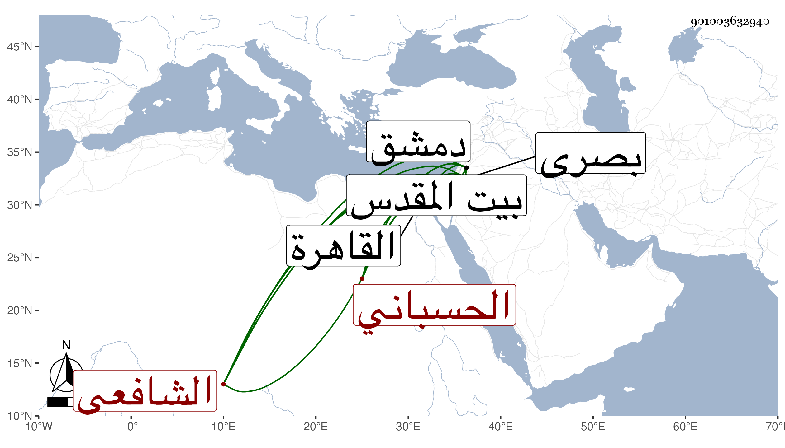

0902Sakhawi.DawLamic.ITO20230111-ara1.EIS1600.901003632940
Biography ID: 901003632940
907
سالم بن سعيد بن علوي أمين الدين الحسباني الشافعي . قدم القدس وهو ابن عشرين سنة فتفقه بها ثم قدم دمشق في حياة السبكي اشتغل ودام على ذلك وتفقه بالعلاء حجي وغيره وأخذ النحو عن جماعة ثم قدم القاهرة فقرأ فيه على ابن عقيل وفي الفقه على البلقيني ، وقدم معه دمشق لما ولي قضاءها وولاه قضاء بصرى ثم لم يزل يتنقل في النيابة بالبلاد إلى أن مات في جمادى الأولى سنة ثمان وقد جاز السبعين وكان مكبا على الاشتغال وفي ذهنه وقفة . وكان مخلا . ذكره شيخنا في إنبائه .
